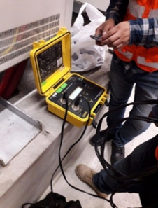

Mantenimiento predictivo
Es el más tecnológico de los tres tipos de mantenimiento que estamos viendo.
Se trata de un conjunto de tareas de mantenimiento que relacionan una variable física o química con el estado en que se encuentra la máquina, con el fin de predecir cuándo empieza a fallar una determinada máquina o equipo. Requiere conocer muy bien los equipos, las técnicas y las herramientas que utilizamos para esa tarea.
Tipos de mantenimientos predictivos
Hay diferentes tipos de mantenimientos predictivos, diferentes técnicas para desarrollarlo como la utilizacion de equipos de medida tales como la camara termografica, megohmetro (medicion de aislamiento), analizador de redes, telurometro, TTR, miliohmimetro, espinterometro (analisis del aceite dielectrico), Multimetro, pinza amperimetrica, ultrasonidos, análisis de vibraciones, etc.
Ejemplos de mantenimiento predictivo
Este tipo de programas de mantenimiento reporta un gran ahorro de costos ya que además de detectar los fallos de manera precoz permite programar con suficiente antelación el tiempo de reparación, los suministros y mano de obra que requerirá la tarea.
En Jofra Ingenieros queremos ayudarte a mantener tus instalaciones en perfecto estado de funcionamiento, brindarte soluciones a cada maquina o zona de tu empresa. Si estás interesado, contacta o llámanos al E-mail jofraingenieroseirl@gmail.com o al tef. 970684693